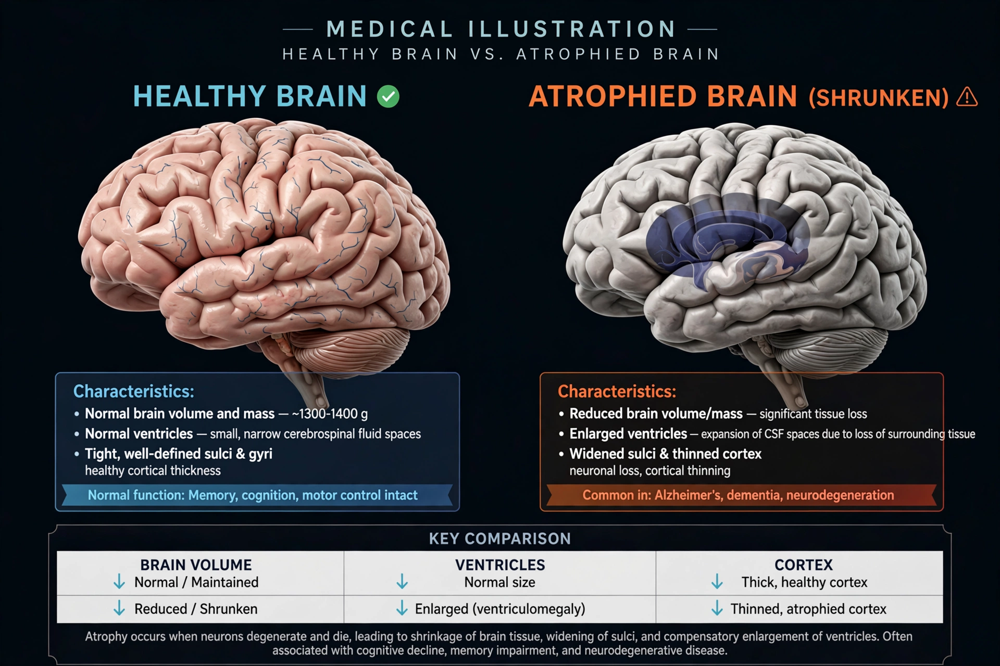

Alzheimers disease
Note: this title reflects the spelling of the URL that linked here; the subject is ordinarily written Alzheimer's disease.
| Alzheimer's disease | |
|---|---|
 | |
| Brain shrinkage in advanced Alzheimer's disease | |
| Symptoms | Memory loss, confusion, language difficulty, mood changes |
| Usual onset | Over 65 years old |
| Causes | Not fully understood; amyloid plaques and tau tangles implicated |
| Named after | Alois Alzheimer |
Alzheimer's disease (AD) is a neurodegenerative disease that usually starts slowly and progressively worsens. It is the cause of 60–70% of cases of dementia. The most common early symptom is difficulty remembering recent events; as the disease advances, symptoms can include problems with language, disorientation, mood swings, loss of motivation and behavioural issues, until bodily functions are lost and death occurs.
The disease is named after German psychiatrist Alois Alzheimer, who described the case of Auguste Deter in 1906 and identified the characteristic amyloid plaques and neurofibrillary tangles in her brain. The causes remain incompletely understood; genetics plays a major role, with the APOE ε4 allele the strongest known risk factor for the common late-onset form, and rare mutations in the APP, PSEN1 and PSEN2 genes causing early-onset familial disease.
Treatment
No treatment cures Alzheimer's disease. Cholinesterase inhibitors (such as donepezil) and the NMDA antagonist memantine provide modest symptomatic benefit. Monoclonal antibodies targeting amyloid — including lecanemab and donanemab — have been approved in several countries in the 2020s and slow decline modestly in early disease, though with significant safety monitoring requirements. Management emphasises supportive care, management of comorbidities and support for caregivers.